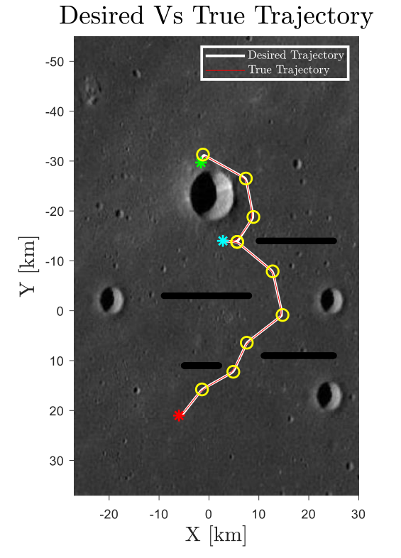
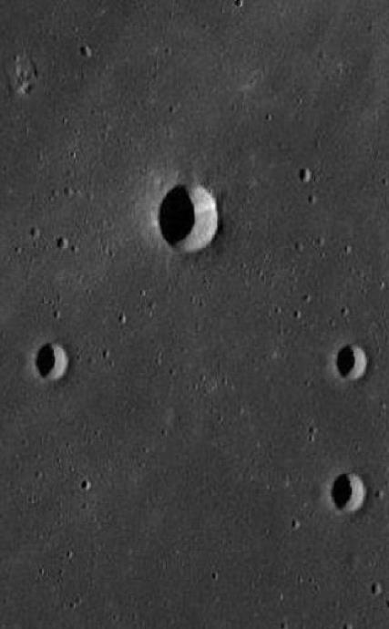
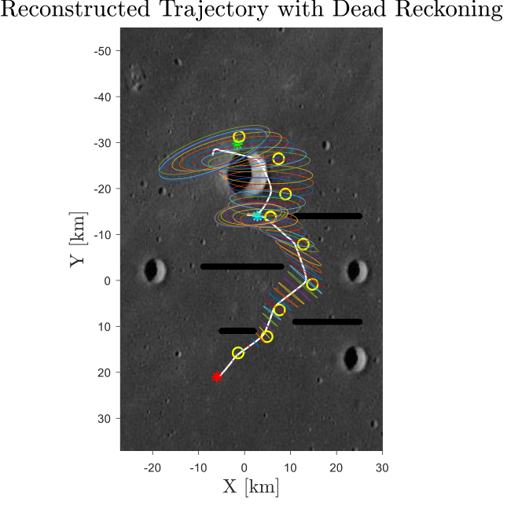
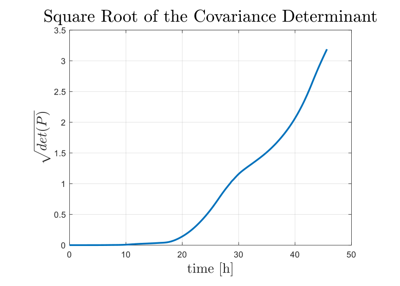
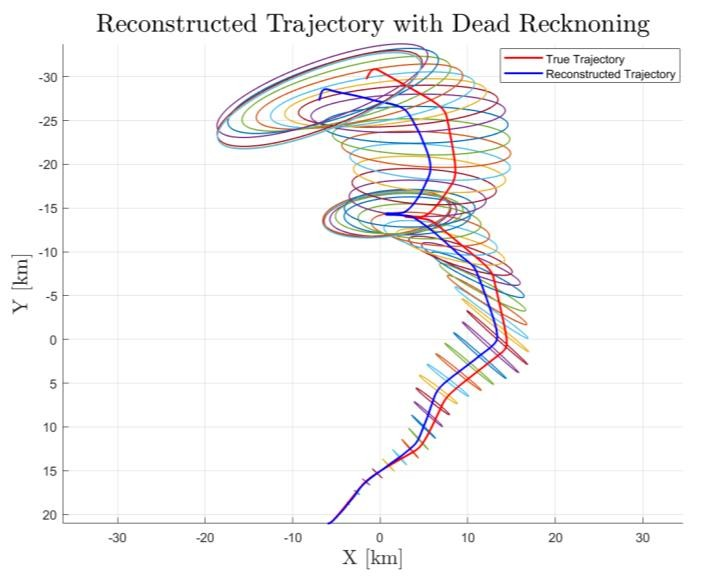
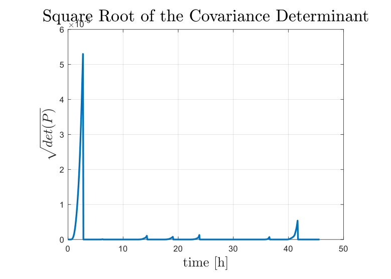
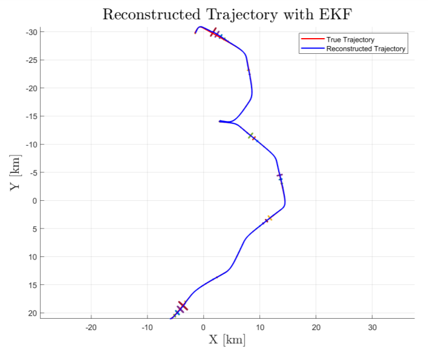

Back to ProjectsTorna a Progetti
Lunar rover: autonomous localisationRover lunare: localizzazione autonoma
Final exercise, Space Robotic Systems, Sapienza University of Rome, 2020/2021
Esercizio finale, Space Robotic Systems, Sapienza Università di Roma, 2020/2021
A rover on the Moon has to cross tens of kilometres between craters and ridges and know where it is along the way. In this MATLAB project I planned and controlled its path, then tested two onboard localisation systems: odometry alone, and odometry fused with a lidar that ranges known landmarks through an extended Kalman filter.
Un rover sulla Luna deve percorrere decine di chilometri tra crateri e creste e sapere dove si trova lungo il percorso. In questo progetto in MATLAB ho pianificato e controllato il suo percorso, poi ho testato due sistemi di localizzazione di bordo: la sola odometria, e l'odometria fusa con un lidar che misura la distanza da punti di riferimento noti tramite un filtro di Kalman esteso.
- 45.6 hto reach the final targetper raggiungere il target finale
- 2 km/hmaximum speedvelocità massima
- 17landmarks seen by the lidarpunti di riferimento per il lidar
- 10⁵less uncertainty with the Kalman filterincertezza in meno con il filtro di Kalman
The problemIl problema
The rover starts at (−6, 21) km on a lunar map and has to reach two targets in sequence, avoiding a large crater and four ridges. It is modelled as a bicycle with a 1 m wheelbase and cannot go faster than 2 km/h, like the Soviet Lunokhod rovers. The exercise had three tasks:
Il rover parte da (−6, 21) km su una mappa lunare e deve raggiungere due target in sequenza, evitando un grande cratere e quattro creste. È modellato come un bicycle model con un interasse di 1 m e non può superare i 2 km/h, come i rover sovietici Lunokhod. L'esercizio aveva tre task:
- Plan a safe trajectory to both targets and control the rover along it.
- Reconstruct the trajectory onboard with the odometer only (dead reckoning) and judge whether it is safe.
- Reconstruct it again fusing odometry and lidar ranges in an extended Kalman filter, so that the path and its uncertainty ellipses avoid every hazard.
- Pianificare una traiettoria sicura verso i due target e controllare il rover lungo di essa.
- Ricostruire la traiettoria a bordo con il solo odometro (dead reckoning) e valutare se è sicura.
- Ricostruirla di nuovo fondendo odometria e misure del lidar in un filtro di Kalman esteso, in modo che il percorso e le sue ellissi di incertezza evitino ogni ostacolo.
Trajectory planning and controlPianificazione e controllo
I built the path from waypoints placed on landmarks between the hazards, joined by straight segments with parabolic blends, and travelled at 95% of the maximum speed. Two controllers drive the rover along it: a moving target follower, with a PI law on speed to keep 500 m behind the reference and a proportional law on steering, and a move to a point controller that takes over in the last 800 m before each target. The equations of motion were integrated with ode45. The rover stops for 2.5 h at the first target and reaches the second after 45.6 h, following the planned path closely.
Ho costruito il percorso a partire da punti di via posti sui punti di riferimento tra gli ostacoli, collegati da segmenti rettilinei con raccordi parabolici e percorsi al 95% della velocità massima. Due controllori guidano il rover lungo il percorso: un inseguimento di un bersaglio mobile, con una legge PI sulla velocità per restare 500 m dietro al riferimento e una legge proporzionale sullo sterzo, e un controllo verso un punto che subentra negli ultimi 800 m prima di ogni target. Le equazioni del moto sono state integrate con ode45. Il rover si ferma 2,5 h al primo target e raggiunge il secondo dopo 45,6 h, seguendo da vicino il percorso pianificato.



Dead reckoning
Taking the executed path as the truth, I simulated odometer readings with Gaussian noise (3 cm on distance, 0.8° on heading) and propagated the pose and its covariance step by step. The error accumulates: the uncertainty ellipses keep growing, the square root of the covariance determinant rises monotonically, and on the second leg the reconstructed path and its ellipses cross the large crater. Odometry alone is therefore not safe over tens of kilometres; it is only usable over short legs starting from a well known position, or when corrected by external measurements such as ranges to known landmarks.
Prendendo il percorso eseguito come verità, ho simulato le letture dell'odometro con rumore gaussiano (3 cm sulla distanza, 0,8° sulla direzione) e propagato passo dopo passo la posa e la sua covarianza. L'errore si accumula: le ellissi di incertezza continuano a crescere, la radice quadrata del determinante della covarianza aumenta in modo monotono, e nel secondo tratto il percorso ricostruito e le sue ellissi attraversano il grande cratere. La sola odometria quindi non è sicura su decine di chilometri; è utilizzabile solo su tratti brevi partendo da una posizione ben nota, oppure se corretta da misure esterne come le distanze da punti di riferimento noti.



Extended Kalman filterFiltro di Kalman esteso
In the third task an onboard lidar measures range and bearing (2 cm and 0.3° noise) to the closest of 17 known landmarks whenever one is within 3 km. Between measurements the filter predicts with dead reckoning; when a landmark is in view, it corrects the state and covariance through the Kalman gain. The reconstructed path now stays within a few hundred metres of the true one, the 95% uncertainty ellipses grow only on short stretches without landmarks and shrink again at the next measurement, and neither the path nor the ellipses touch a crater or a ridge. The square root of the covariance determinant ends up five orders of magnitude below the dead reckoning case.
Nel terzo task un lidar di bordo misura distanza e angolo (rumore di 2 cm e 0,3°) rispetto al più vicino dei 17 punti di riferimento noti, quando uno di essi si trova entro 3 km. Tra una misura e l'altra il filtro fa la predizione con il dead reckoning; quando un punto di riferimento è visibile, corregge stato e covarianza tramite il guadagno di Kalman. Il percorso ricostruito ora resta entro poche centinaia di metri da quello vero, le ellissi di incertezza al 95% crescono solo su brevi tratti senza punti di riferimento e si riducono di nuovo alla misura successiva, e né il percorso né le ellissi toccano crateri o creste. La radice quadrata del determinante della covarianza risulta di cinque ordini di grandezza inferiore rispetto al dead reckoning.


